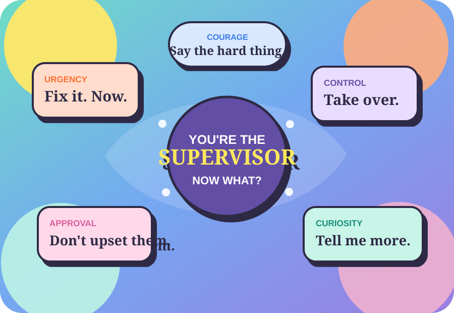

Meet your reaction.
The self-check notices what gets louder for you under pressure: urgency, control, approval, curiosity, or courage.
This starts with you, then moves into real supervisor moments.
A staff member cries during feedback. Somebody challenges you in front of the team. You are holding a write-up. A medication error gets reported. Suddenly your own reactions are in the room too.
Leadership Lab is where you practice those moments before they are live. You will start by noticing what gets loud inside you, then use that insight in conversations and supervisor modules.

Start by noticing what you bring into the room. Then practice leading through the actual responsibility.
The self-check notices what gets louder for you under pressure: urgency, control, approval, curiosity, or courage.
Your result shows exactly which answers shaped it. No mystery personality label.
Type what you would actually say. The other person reacts to your move, and the conversation changes.
Modules connect leadership to real supervisor responsibilities like corrective action, med errors, conflict, repair, and safety.
Eight quick supervisor moments. About three minutes. There is no pass or fail. You are looking for your first instinct before the polished leadership answer arrives.
These are short enough to use before a real conversation.
The med-error preview is the model: a real event happens, your internal reaction shows up, you make a choice, new information appears, and you lead the next move. Policy tells you what must happen. The Lab helps you practice how you show up while it happens.
“I think I gave Jordan the wrong medication.”
Future policy-based modules should use the organization's actual procedures and required reporting. Leadership Lab is practice support, not a replacement for policy, clinical direction, HR, or compliance.
Every result comes from choices you actually made. Open any moment to see what shifted.
There is no perfect script. Watch whether your words make honesty, clarity, and repair easier or harder.
Each future module should connect a real supervisor responsibility with the internal leadership work happening at the same time.
“I think I gave Jordan the wrong medication.”
A full module would pair the organization's actual medication-error procedure with leadership coaching. The Lab should never replace policy, clinical direction, or required reporting.